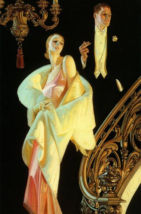
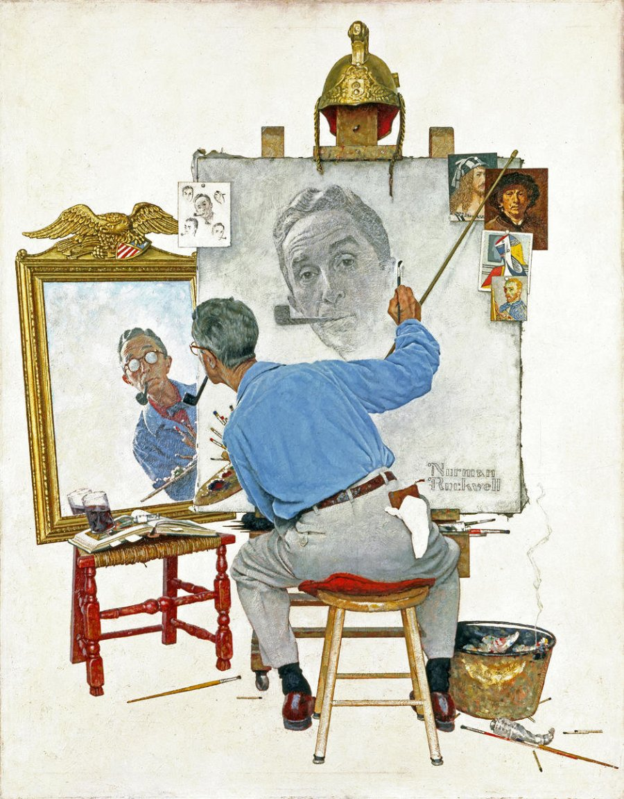
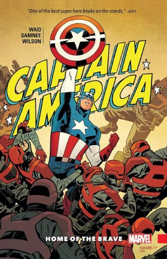

Hirchy!
The Sketchbook!
Lets go home!

I love this guy. I'm a massive fan of his use of color. His works are extremely vibrant, and also have such beautiful composition. Also with how he draws humans! They're graceful! Wow!

What draws me to his work is how alive it is. Alongside the vibrancy, there is just something with how he draws faces. Not to mention the storytelling in his work. Everything combined, he creates lively pieces that are just hard not to love.
I've said it before, and I'll say it again. Charming. Reminds me of a warm apple pie. A postage stamp from an old friend that was slapped onto a handwritten letter. Family dinner, but in the good way. His art style may be simple, but his ability to compose and show motion is just master class. I'd kill for his autograph or a work of his.

I think the biggest thing I learned was in the midst of rediscovery/relearning links; and that particular thing is? I hate putting images and links. Grr. Thank god I kept my links on-hand. It made things go so much smoother. Will say with images, didn't work at first because I forgot to add "img/". Sorted that quickly after, but it sure stumped me for a hot minute. Also another thing I've noticed is that I really like composition and love storytelling. I can see that with how I gravitate towards Samnee and Rockwell's work. Also colors with Leyendecker! Love that guy so SO much!
about!
Hirchy!
The Sketchbook!
Lets go home!